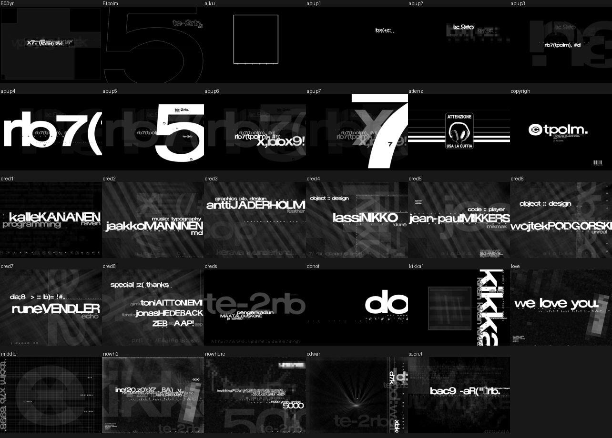
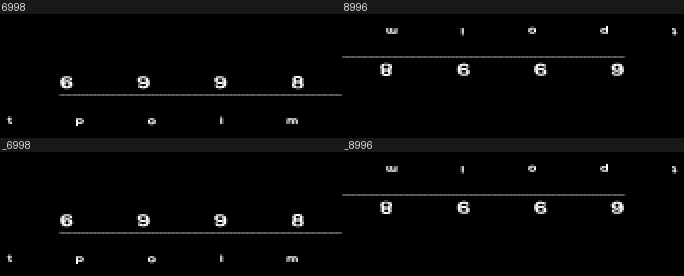
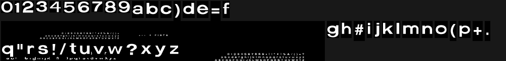
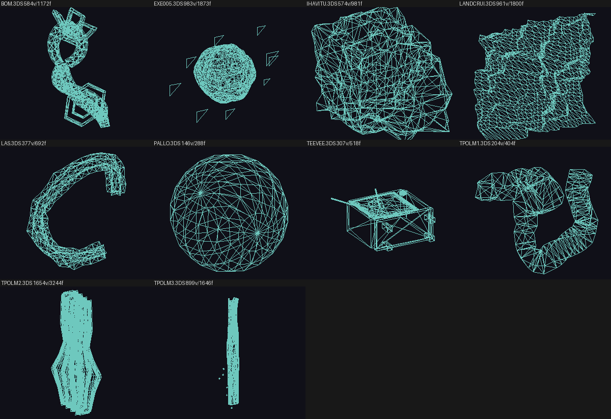

STATUS: complete. All 13 scenes S0..S12 (frames
0..3004, music 0:00 .. 5:00) are covered and bit-exact against the
original running in an emulator (3005/3005 frames). Frames 3005..3071
(the music tail up to 307.2 s) have no picture in the original.
Addresses are linear addresses of the unpacked image (see
WRITEUP-asm.md); constants are read from
re/data.bin (base 0x100000). Code:
web/js/*.js; the log of how each number was found:
re/NOTES.md, re/notes_3d.md.
A typographic, deliberately black and white 640x480 demo (INFOFILE: "is supposed to be black & white 640x480", "uses mikit over midas"; VESA mode 0x101, 8 bit, UniVBE/SciTech LFB code, MIDAS sound). Every picture is one byte buffer of 640x480; every layer (grain, slide, sprite, 3D) is added into it modulo 256, and only at the end a 256-entry grey palette (6-bit DAC) is written through the VGA ports, every frame. All the motion that looks like "fades", "flashes" and "pulsing" is the palette, not the pixels. Images are 8 bit greys shifted right by 2 at load (0..63), so the 3D layers (intensity wraps mod 256) can be added on top and the palette folds them back into grey.
[0x10efa0], incremented by the MIDAS timer
callback 0x1d010, registered at 70.000 Hz (0x11170 milli-Hz). Scenes
wait on the music with the gate 0x1e044 (order*64+row
compared as one integer).web/data/xmrows.json maps (order,row) -> seconds (0.16 s
per row, 10.24 s per order, 30 orders = 307.2 s).scenes_2d.js START): first loop iteration
of S0..S12 = frames 0, 120, 423, 549, 820, 1080, 1364, 1669, 2048, 2260,
2468, 2671, 2772 (the first iteration of each scene except S0 is
displayed black). A scene starts at the first frame whose music position
reaches the exit gate of the previous scene.| scene | frames | scene fn | content |
|---|---|---|---|
| S0 | 0..119 | 0x1edb0 | grain + apup1..7 slides, palette pulse/fade |
| S1 | 120..422 | 0x1f0f8 | grain + alku slide + TV (TEEVEE.3DS) + five random digits |
| S2 | 423..548 | 0x1f380 | grain + donot slide + "do" wire lattice, palette flash |
| S3 | 549..819 | 0x1f604 | 500yr slide + sprite + IHAVITU.3DS |
| S4 | 820..1079 | 0x1f7c4 | kikka1 slide as a trail + LAS.3DS |
| S5 | 1080..1363 | 0x1f990 | odwar slide + sprite + TPOLM3.3DS |
| S6 | 1364..1668 | 0x1fb74 | middle slide trail + PALLO sphere, solid + wire |
| S7 | 1669..2047 | 0x1feb4 | credits/love slides + EXE005.3DS, wire/solid alternating, palette flicker |
| S8 | 2048..2259 | 0x200d8 | grain (second noise buffer) + sprite + BOM.3DS, mode 4 |
| S9 | 2260..2467 | 0x202d8 | nowhere slide trail + BOM.3DS, mode 4, light on the eye |
| S10 | 2468..2670 | 0x204e0 | nowh2 slide trail + BOM.3DS, mode 8 (fill + outline), eye scale, big negative fade |
| S11 | 2671..2771 | 0x20730 | creds slide trail + TPOLM1.3DS wire |
| S12 | 2772..3004 | 0x208f4 | copyrigh slide trail + TPOLM1.3DS wire, final fade |
Gates: S8 ends at (22,4), S9 at (24,6), S10 at (26,5), S11 at (27,4), S12 at (29,22) = frame 3005. After S12 the main routine calls the shutdown (0x27d64) and prints the exit text; before S0 it shows a pre-demo slide (0x20de8, not ported, no music yet).
Base palette: entry e = min(e, 63) on three equal channels; the
screen grey is 4 x DAC.
layers.js Palette.dac(arg, clk, row); arg is
chosen by the scene at the end of each loop iteration
(scenes_2d.js argOf), the palette in force when frame k is
shown is the one set at the end of iteration k-1 (LAG:
S0..S2 see the row one frame earlier than S3..S8):
trunc(1 + (row-0x16) x c) at order
7 from row 0x16, with the double constant c =
1.5238095238095237 read from the data (0x1015a1). The rounded literal
1.5238095238 gave 32 instead of 33 for row 43 - always take the exact
data constants. Other fades: S4 1+(row-3)*2 at order 10; S5
1+row*3.2 at order 13; S6
1+row*3.3684210526315788 at order 16; S7
1+(row-0x2c)*3.0476190476190474 at order 19 from row
0x2c.(65 - arg)/64 is then > 1, there is no clamp and the
result goes through a byte store; the VGA DAC keeps 6 bits, so the
palette is stored & 63
(layers.js Palette.dac). See S10.noise.js)Two 4 x 640 x 480 = 1,228,800-byte noise buffers are generated once
at start-up from the Watcom rand() (0x28716):
seed = seed x 0x41c64e6d + 12345 (mod 2^32), result
(seed >> 16) & 0x7fff, seed at 0x105f4c, starts
at 1, nobody calls srand.
(rand & 255) >> 6 per byte, then 100 runs: start
trunc((sin(rand)+1) x (N - len)) >> 2 (len =
trunc((sin(rand)+1) x 1000)), filled with
(rand & 255) >> 4.trunc(q^2 x 32) with q =
float32((rand & 255) >> 3) x 0.03125 (float32 stores), then
300 runs of zeros (len trunc((sin(rand)+1) x 600)), start
trunc((sin(rand)+1) x (N - len)) >> 1.rand(); offset =
trunc((sin(r) + 1) x 614400); the first 307,200 bytes of
the screen = noise[offset ..] (wrapping around the end of the buffer).
S0..S2 read B, S8 reads A (edx = 0). The rest of the frame is added on
top (slide), so the black parts of the slide show the grain.rand() is called once per frame in frames 0..548 and
never in S3..S7; S8 continues the sequence: frame k
>= 2048 uses call number 549 + (k - 2048). To be a random-access
function of k the port jumps the LCG ahead (jump(),
square-and-multiply on the affine map) from the measured start
state.Slide alku added on grain; TEEVEE.3DS (a TV on a table)
is rendered into a 273 x 300 window at (189, 55) and added. Camera =
target + 100 x sin(angle) per axis, angle = float32((clk - 847) x rate x
0.2), rates 0.0385 / 0.0223 / 0.0518; the light sits on the camera
target. Mode 4, attenuation flag 0, focal args 0.4. Under the TV
(0x1e078) five random digits are printed at (190, 377), 61 px per glyph,
from the per-digit glyph TGAs fonts/0..9:
n = ((clk >> 2) x 0x23ec3f mod 2^32) mod 0xf423f,
%d, left padded with '0' glyphs to 5 characters (a 6 digit
number loses its last one).
scene_do.js)A different engine (0x24488 camera + splines, 0x24334 draw, 0x24a00 bend; scene object 0x10f2bc) that never calls 0x2936c. Object = 4 x 4 x 4 lattice, 36 lines with 4 control points each (3 axes x 12 (u,v) pairs, coordinates -24, -8, 8, 24). With t = float32(clk - 7 x 423):
x x a, a = sin(0.0061 t) x 0.04.engine.js lookAt with columns 0/1 swapped and
rows remapped (x, -z, y).(sin(x pi/32) sin(y pi/32))^4 x 32, nearest-neighbour
scaled with a 16.16 DDA; the pixel is dst + tex, or 0x40 if
that exceeds 0x40 (saturating, not additive mod 256). Column x = 639 and
row y = 479 are never drawn.engine.js line()).sx = invz x x + 320, sy = invz x y + 240,
invz = float32(192 / z); blobs
trunc(x x 192 x invz x 0.7) + 319 / + 239, radius from
192 x 16 x invz x 0.0625.engine.js, 0x2936c;
re/notes_3d.md)Not a textured/z-buffered engine: one 640x480 byte buffer, additive.
w per pixel (0x5da58: float
clip, 16.16 slope, one add [mem], dl).acc += src[i]; dst[i] += (byte)acc, the
accumulator is not reset between rows) rebuilds the interiors. No
z-buffer, no sort (the sum is commutative). I =
trunc((w1+w2+w3)/3).[ctx+4] == 8. The
outline lines are added directly into the 640-pitch screen
bitmap, not into the edge buffer, so they are not prefix-summed
(putting them in the edge buffer gave garbage stripes).
engine.js: ctx.wc is a separate line buffer
returned as out.wire; scenes_3d_e.js adds fill
and wire.scene+0xa4 = 0 puts
the scene light on the camera target (S1, S3..S8), = 1 on the camera
eye (S9..S12; 0x422e8 at 0x42a82). Scene+0xa8 (S10
only) scales the eye, see S10.d = L - centroid, theta = acos(n.d/|d|)
(0x59284 = pi/2 - atan(c / sqrt(1-c^2))),
shade = trunc((16 - theta x 16 x k) x att) where
k = the double constant at 0x10326d =
0.3183099524062959, not 1/pi (with 1/pi one PALLO face
at 6.0000054 rounded to 6 instead of 5 on frame 1625). att
= 1 if the attenuation flag is 0, else I x 0.1333 for dist
< 75, else I / (dist x 0.1) with I = the per-scene value
(S3 128, S4 32, S5/S7/S8 64, S6 32). Without a light:
trunc(256 - theta x 81.487).sx = x x (1/z) x focal + bw/2. Clipper
(0x592d0): 5 planes (4 sides from
atan(half/focal) - 0.0001, near plane z = 10), outcode per
plane, 7 = reject, 1/2/4 = two triangles, 3/5/6 = one, recursion on the
next plane; the shade rides in the vertex w.scale = sin(y x 0.05 + g x 0.5) x 0.3 + 0.8 with global g
(0x122644) += 0.18 after every object's vertex pass.scenes_3d_b.js)The camera is the 3DS keyframer camera (position node 0xB003 + target
node 0xB004, roll 0xB024; BOM has two cameras, the scene selects
"Camera02" by its 0xB010 node name, 0x292ac). At load
the demo resamples every track to one float32 sample per integer frame
(0x42e88 -> 0x58a7c, 0x58f74) and 0x422e8 linearly interpolates
between samples at the fractional frame. The spline is a
Hermite with the TCB values thrown away by the loader
(tension = continuity = bias = 0: every factor is exactly 1), key frame
= the low int16 of the key's frame dword, tangents
in = ((P - Pprev) + (Pnext - P)) x (f - fp)/(fn - fp),
out = same x (fn - f)/(fn - fp). With the loop flag set
([0x122638] = 1) the last key's next is the first key, but
the first key's previous is a NULL key: the walk to
"last" runs past the end of the key list, so the first key's tangent is
computed against frame 0 / position 0 (found by fitting the emulator's
dense table, not obvious from the code). Track time = start + arg
(float32), wrapped into [start, end) by repeated float32
subtraction; arg per scene: S3 clk x 0.3
(absolute), S4 (clk - 7x820) x 0.11, S5
(clk - 7x1080) x 0.32, S7 clk x 0.5
(absolute), S8 clk x 0.15 (absolute). Roll = track x 1/360
in radians, or, with no roll track, cam+0x38 is multiplied
in place by 0.0017684404124003043 on every call. Scene
setup: S3/S4/S5/S8 mode 4, focal arg 0.4 (S7 0.8, S8 0.4); S3 att 128,
S4 32, S5 64, S8 64.
S3: slide 500yr copied, sprite 8996
(171x62) added at the bottom-left, IHAVITU added. S5: odwar
copied, sprite 6998 at the top-right (x = 640 - w, y = 0),
TPOLM3. S8: grain A, sprite 6998 at the top-right, BOM. The
sprite blit (0x1de34) adds non-zero pixels mod 256 without clipping.
trail() in scenes_2d.js)Each loop iteration does buf = (buf + slide) >> 1
and then the 3D layers are added into the same buffer
(S4: kikka1 + LAS; S6: middle (0x1fc28,
[0x10f144]) + PALLO). The buffer is not cleared: it carries
over from the previous frame (and for the first iteration from the
previous scene's last buffer: S5's for S6, S3's for S4), so every frame
depends on all the earlier frames of the scene (an exponential average,
~7 frames of memory, but exact to the byte after the integer
truncations).
Per frame, after the trail averaging, two renders into the same buffer: mode 4 (att 32, focal 0.8, the roll seen by 0x422e8 is raw x BANK) then mode 2 (att 32, focal 0.6, roll raw x BANK^2, almost zero). Both with the same procedural camera: f_i = float32(clk x {0.0031, 0.0021, 0.0011}), target = (sin f1, cos f0, sin f2) x 50, eye = sin(f_i) x 200, bank = sin(4 f2) x 400. The pulse phase g advances by 0.18 per render call (2 per frame), float32 accumulated, so it is replayed from the anchor 2521.349365234375 at frame 1364. Bug found on the way: the wire buffer is only 640 x 479 long; adding 640 x 480 indices produced NaN -> 0 on the last row.
The buffer is overwritten each iteration with a
slide: index ((clk - clk0) >> 8) mod 11 into
cred1..cred8, love, love, love (0x1ff01); the parity of that index picks
the mode: odd -> mode 4, even -> mode 2 (att 64, focal 0.8, 3DS
keyframer camera, arg = clk x 0.5). Palette: the flicker (-6) until
order 19 row 0x2c, then the fade. The material names (BUMP, MOB)
suggested bump mapping in the first notes; the port reproduces the
frames with the same additive mesh engine and never reads materials.
Order 20 row 0 .. order 22 row 4 (frames 2048..2259). Grain from
buffer A, sprite 6998, BOM.3DS (6 meshes of 72 vertices, cameras
Camera01/Camera02, the demo picks Camera02), mode 4, att 64, focal 0.4,
arg = clk x 0.15, added mod 256. Palette: pulse until order
21 row 0x30, then the fade 1 + (row - 0x30) x 3.2, then at
order 22 rows 0..4 1 + (row + 16) x 3.0476190476190474
(read from code 0x20226..0x2029d; verified on frames 2150..2259, where
the oracle golden_d continues). S8 ends at gate (22,4);
frame 2260 is S9's black opening frame.
The scene index, the fade argument and the animation are functions of
(music order/row, 70 Hz clock), and the clock is a function of the
frame: a frame is a pure function of its index k (music
time k/10 s). So seek = set the module position (libopenmpt
setPos) and render frame round(t x 10). Where
the original keeps state, the port recomputes it:
flashScale, a few hundred float32 steps);palloG);accOf(START[s]-1), recursive). S4 and S6 replay at most
~300 frames; S10, S11 and S12 chain back through S9 (S9 starts from S8's
single frame), so the last frame of S12 replays S9..S12 = 745 frames.
Measured in node on this machine, cold (one frame including start-up of
about 0.15 s): about 1.0 s for the end of S6 and about 1.7 s for the end
of S12 (worst case). Not measured in a browser.All four use the S4/S6 trail rule
buf = (buf + slide >> 2) >> 1 (first iteration
starts from the previous scene's last buffer), then the 3D layer is
added mod 256 in place. No grain, no sprite. All have
scene+0xa4 = 1 (light on the eye).
nowhere ([0x10f148]), BOM.3DS with "Camera02", mode
4, att 32 (S8: 64), focal 0.4, track time clk x 0.15. Palette:
arg 0 until order 23 row 0x32, then
1 + (row - 0x32) x 3.0476190476190474 (fade out), at order
24 rows 0..6 1 + (row + 14) x 3.0476... (hold).nowh2, same BOM/Camera02/att 32/0.4/clk x 0.15, but
mode 8 (fill + outline). Two extras:
order*64 + row > 1604.0f (float 0x44c88000, i.e. order
25 row 5, not row 0), clk_first = the clock stored in that
iteration and a8 = float32((clk - clk_first) x 0.002); the
first frame that sees it (2568) has a8 = 0, 2569 is the first scaled
one. The eye is multiplied by (1 + a8) per component
(float32 stores), the light is taken on the unscaled
eye, the target is not scaled. The camera slowly pulls away.trunc(1 + (row - 0x1c) x 0.9846153846153847).
It is negative for the first part (-22 at order 25 row
4), so the scale (65 - arg)/64 is above 1, nothing clamps
it and a real DAC would wrap (& 63, which is what the
emulator golden contains): the picture is not a fade there. The port
saturates at 63 instead (SATURATE_DAC, layers.js), so the
14 over-bright frames (2567..2569, 2582..2590, 2670, 2671) show white
flashes rather than black ones. DAC saturation (SATURATE_DAC in
layers.js, default true): the original byte-stores trunc(base*scale) and
OUTs it to 0x3c9 unclamped (0x1eb70: fistp, mov al,[esp+4], out via
0x28706), so values >63 are sent as-is (up to 74 here); a real VGA
DAC and DOSBox keep 6 bits (wrap, flashes black) and our golden harness
(re/golden.py _out, val&63) masks too, so
the emulator golden has the wrap baked in. User report (4:18) says the
original shows white, so the port saturates at 63 instead (set
SATURATE_DAC=false for the bit-exact emulator wrap). Affected: only
arg<0 frames other than -6/-7 whose pre-mask value exceeds 63, 14
frames: k=2567..2569, 2582..2590 (258.2..259.0 s, args -13..-8, max
69..74), 2670, 2671. Those frames now differ from the emulator golden BY
DESIGN (the dark-wrapped grey levels become 63 = white); all other
frames, including the -6 flicker (already clamped by 0x1ebec) and the -7
flash (clamped by 0x1ecc8), are unchanged and exact. Which behaviour
real hardware had is not settled by the evidence: hardware wraps, the
user's memory says white. Two special values occur once each: row 0x13
gives arg -7 (the flash, scale 2) and row 0x14 gives arg -6 (the cos
flicker, with S7's clk0).creds ([0x10f128]), TPOLM1.3DS (the only
mesh of the ending; its one camera Camera01, picked by 0x292e0 = first
camera), mode 2 (wire into the 640-pitch buffer, 639 x
479 window, like S7), att 128, focal 0.4, clk x 0.15 (absolute clock).
Palette: arg 0 until order 27, then trunc(1 + row x 16)
(0x1016d9) for rows 0..3.copyrigh ([0x10f164]), same TPOLM1 wire layer.
Palette: arg 0 until order 29, then
trunc(1 + row x 2.909090909090909) (0x1016f1); the last
frame (3004, row 21) has arg 62, i.e. 3/64 of the white ramp: nearly
black, not exactly. The scene ends when gate (29,22) is true (frame
3005); the other test, gate (1,10), only aborts if the music restarted.
LANDCRUI.3DS and TPOLM2.3DS are loaded by the demo but used by nothing:
the functions that would draw them (0x20acc, 0x20c8c, 0x20e7c) are not
in the main call list (0x1d265..0x1d2a1).The art ships as plain files next to DEMO.EXE (80 TGA,
10 3DS). The previews were decoded independently with a Pillow script
(python3 -I).
DATA/, 80
files)All 80 files are TGA type 11 (RLE greyscale), 8 bpp, no colour map,
origin bottom-left (checked on every file; the RLE decode consumes
exactly w*h bytes). Packet: b & 0x80 = repeat next byte
(b & 0x7f) + 1 times, else b + 1 literal
bytes. The demo's decoder is at 0x1e1c0 (header) / 0x1e4fc (RLE);
afterwards it flips the rows and does pixel >>= 2
(re/NOTES.md), so a pixel is a 6-bit index into the palette
the demo writes at run time (see the palette chain). The previews show
the raw 0..255 value as grey. "Values" = distinct pixel values in the
file.
| Group | Files | Size | Values |
|---|---|---|---|
| Slides, 640x480 | 29 files: 500yr, 5tpolm, alku, apup1..7, attenz, copyrigh, cred1..8, creds, donot, kikka1, love, middle, nowh2, nowhere, odwar, secret | 640x480 | 17 (alku, apup1) to 256 (cred4); 500yr 32, 5tpolm 29, apup2..7 30 or 32, copyrigh 32, donot 26, nowh2/nowhere/odwar/secret 32, kikka1 138, middle 217, love 240, creds 157, attenz 248 |
| Sprites | 6998, 8996, _6998, _8996 | 171x62 | 18 each (1,517 bytes each) |
| Glyph cut-outs | DATA/FONTS/: 0..9 (about 10..24 x 22..24), A..Z (9..34
x 34), CLOSE, EQUAL, HOMO1, OPEN, PLUS, POINT, QUOTE, SHOUT, SLASH, WHAT
(11..25 x 39..40) |
one TGA per glyph | 6 to 17 |
| Full-frame font sheet | FONTS/FONT.TGA |
640x480 | 17 |
That is 29 slides + 4 sprites + 46 glyph files + FONT.TGA = 80. File sizes of the slides: 8.7 KB (apup1) to 309 KB (cred3).
Usage stated in the scene notes above: alku S1 (under
the TV), 500yr S3 + sprite 8996,
odwar S5 + sprite 6998, kikka1
S4, middle S6, cred1..cred8 and
love S7, sprite 6998 S8, glyphs
FONTS/0..9 the five random digits under the TV (S1). The
other slides (5tpolm, apup*,
attenz, copyrigh, creds,
donot, nowh*, secret) are loaded
by the demo (load order in re/NOTES.md) but their scenes
are not described in this document.
Figures: slides, sprites, glyphs.



Counts read from the files (all objects of type mesh; faces =
triangles). uv = UV-coordinate count.
| File | Bytes | Meshes (vertices / faces) | Total v / f | UV | Cameras / lights | Used by |
|---|---|---|---|---|---|---|
| BOM | 29168 | Object02..05 72/144 each, Object06 90/184, Object01 110/220, Object07/08 24/48, filler1/01/02 16/32 | 584 / 1172 | none | 2 / 3 | S8 |
| EXE005 | 45915 | Sphere 956/1864, Object01..09 3/1 (9 triangles) | 983 / 1873 | 956 | 1 / 0 | S7 |
| IHAVITU | 22210 | kikko 574/981 | 574 / 981 | none | 1 / 0 | S3 |
| LANDCRUI | 37456 | kikko 961/1800 | 961 / 1800 | none | 1 / 0 | not described above |
| LAS | 13922 | Loft01 348/692, Line01 29/0 | 377 / 692 | none | 1 / 0 | S4 |
| PALLO | 6745 | Sphere01 146/288 | 146 / 288 | 146 | 0 / 0 | S6 |
| TEEVEE | 20471 | Object 205/386, Object01 46/40, rima 16/32, poyta 8/12, pjalka..pjalka03 8/12 each | 307 / 518 | 261 | 2 / 1 | S1 |
| TPOLM1 | 10995 | Object 204/404 | 204 / 404 | none | 1 / 2 | not described above |
| TPOLM2 | 77790 | unreal 1024/2044, unreal01..15 42/80 each | 1654 / 3244 | 1024 | 1 / 1 | not described above |
| TPOLM3 | 51045 | Object 603/1202, Object01..37 8/12 each | 899 / 1646 | 603 | 1 / 1 | S5 |
Notes. re/NOTES.md calls BOM "6 meshes of 72 vertices";
the file holds 4 meshes of 72 vertices plus the others listed (the same
counts come from tools/parse3ds.py), and the notes' "9
small ones" for TPOLM2 do not match the 15 unrealNN meshes
in the file. TEEVEE has materials with texture map names
ASHSEN.GIF, SIVU5.GIF, TEAK.JPG
(other materials have no map); those image files are not shipped, and
the port never reads materials. EXE005 has materials BUMP
and MOB without maps.
Wireframe of every mesh object in each file (cameras and lights are not drawn): figures/art_meshes_wire.png

rand() (see "The grain").(sin(x pi/32) sin(y pi/32))^4 x 32 (see S2).tools/cmp2d.py against the six golden directories; see
README.md for the per-scene table).sin/cos/sqrt/atan
are JS doubles, not the x87 (1-ulp risk is theoretical: none seen on
3005 frames); camera and paths are verified only on the golden run
(virtual 7-ticks-per-frame clock); frames 3005..3071 have no picture in
the original (the player holds the last, near black frame); dead
functions 0x20acc/0x20c8c/0x20e7c and the pre-demo slide 0x20de8 are not
ported; the audio is libopenmpt, only checked to the extent that the
music-position feed of the golden run works, not sample by sample.ORIG_FPS = 35 in scenes_3d.js, unmeasured)
about 3.5x faster. The port now computes g from the clock: g = anchor +
0.36 x frames, frames = (clk - 9548)/70 x ORIG_FPS. Frame 1364 still
matches the golden; later S6 frames (1365..1668) deliberately do NOT
(pulse phase off by up to ~150 rad of sin argument at 1600, so the
sphere shape differs; the camera, palette and trail are unchanged).
Trail decay (0.5 per frame) is still replayed per 10 fps frame.